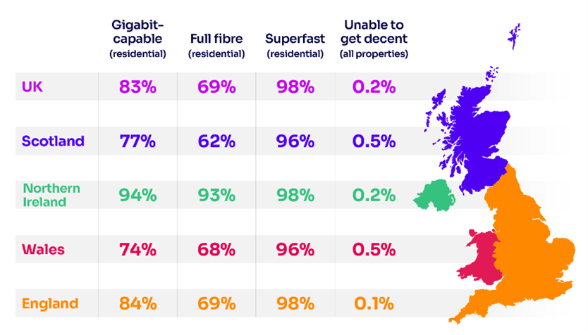

- Rapid rollout sees record reach of full-fibre broadband to more than 20 million UK homes
- Average UK download speed reaches 223 Mbit/s
- 5G deployment continues to gradually expand
A record 20.7 million UK homes can now access full-fibre broadband, according to Ofcom’s latest annual report on the nation’s broadband and mobile networks.
Ofcom’s Connected Nations report finds that 69% (20.7 million) of UK homes now have access to full-fibre broadband, up from 57% (17.1 million) in September 2023. Northern Ireland leads the way with 93% of homes able to access full fibre [1].
By using fibre optic cables all the way to the home instead of copper lines, full-fibre broadband is faster and more reliable. Full-fibre networks, as well as cable, can potentially deliver speeds of one gigabit per second (Gbit/s) or higher, which means a better experience when doing activities like streaming, gaming and making video calls.
Taking full-fibre and cable networks together, 25 million homes (83%) now have access to a gigabit-capable broadband connection. This suggests the Government’s target of 85% coverage by 2025 is likely to be reached.

Full-fibre take-up climbs year on year
The number of households signed up to full-fibre broadband services where available has risen from 28% to 35% (7.5 million households) between May 2023 and July 2024.
Take up of full fibre is notably higher in rural areas than in urban areas. Over half (52%) of homes in rural areas with full-fibre access are signed up, compared with just under a third (32%) in towns and cities.
With customers moving in greater numbers to higher-speed broadband packages, the UK average maximum download speed has also increased from 170Mbit/s to 223 Mbit/s in 2024.
It’s a record-breaking year for broadband in the UK, as the roll out of full fibre continues to steam ahead.
Whether you’re running a business, streaming your favourite programmes, or doing Christmas shopping online, it’s more likely than ever that you’ll be able to benefit from a fast and reliable broadband connection.
- Natalie Black, Ofcom’s Networks and Communications Group Director
The report, which covers the full range of the UK’s communications networks, also contains other key findings, including:
Superfast broadband take-up reaches 75% of premises
Take-up of superfast broadband - services with download speeds of at least 30 Mbit/s – has increased from 72% to 75% of residential and business premises.
The law says that, when this threshold has been reached, Government can ask Ofcom to review certain aspects of the broadband universal service obligation (USO). We have today informed Government that we believe this milestone has been met. The USO gives everyone in the UK the right to ask for an upgrade if they can’t get ‘decent’ broadband - delivering download speeds of 10 Mbit/s and upload speeds of 1 Mbit/s [2].
Our report shows there has been a reduction in the number of premises unable to get decent broadband – down from 61,000 to 58,000 since last year. Our estimates indicate that this could fall further to 26,000 by mid-2027.
Satellite broadband take-up more than doubles
More people than ever before are looking to space for their broadband connection.
In 2024, Starlink’s satellite broadband reached 87,000 connections – the majority in rural areas - more than doubling from 42,000 last year.
Deployment of 5G networks increases steadily
The availability of mobile 5G continues to gradually expand. 5G technology now carries more than a fifth (21%) of all monthly mobile data traffic in the UK [3], while around 50% of mobile handsets are now 5G capable.
Mobile network operators’ 5G coverage outside premises ranges between 61% and 79% each. 5G coverage outside premises where it is available from at least one operator increased to 95% - up from 93% last year [4]. We continue, however, to see significant differences across the UK, with 5G deployed in 42% of sites in urban areas, compared to 16% of sites in rural areas.
4G remains the most used technology, carrying 78% of all monthly mobile data traffic. 4G landmass coverage where it is available from at least one operator is now at 95%, up from 93% last year, largely driven by the Shared Rural Network programme.
Legacy 3G networks are being phased out, with two mobile network operators having already completed the process, and 2G expected to be shut down by 2033.
Improving our mobile coverage reporting
Current coverage reporting based on existing signal strength predictions from mobile network operators has limitations and does not necessarily reflect customers lived experience.
Improving our coverage and performance reporting and exploring new ways to capture this data is a priority for Ofcom in the coming year. This work will include overhauling our mobile web-checker tool, which we will re-launch in the summer.
Notes to editors:
- Reports for each of the UK's nations can be found here.
- If you can’t get a download speed of at least 10 Mbit/s and an upload speed of at least 1 Mbit/s (this is defined as a 'decent connection'), you have a legal right to request an upgraded connection. You can make this request to BT, or to KCOM if you live in the Hull area. You don't need to be an existing customer to apply.
- Total monthly mobile traffic overall has grown by 18% this year to 1069 PB, albeit at a slower pace compared to the 25% growth observed between 2022 and 2023.
- Refers to high confidence which is associated with around 80% probability of 5G coverage availability for areas outside of premises where at least one mobile network operator provides coverage.